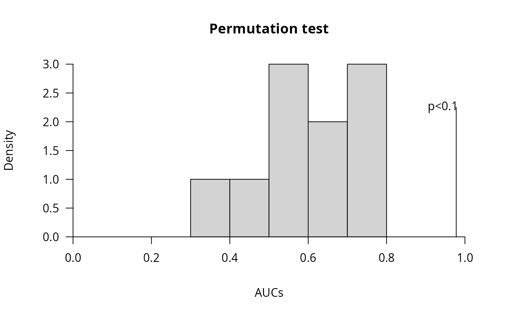

Plot permutation test using actual model and permutated models
Usage
permutation_test_plot(
nmr_data_analysis_model,
permMatrix,
xlab = "AUCs",
xlim,
ylim = NULL,
breaks = "Sturges",
main = "Permutation test"
)Examples
# Data analysis for a table of integrated peaks
## Generate an artificial nmr_dataset_peak_table:
### Generate artificial metadata:
num_samples <- 32 # use an even number in this example
num_peaks <- 20
metadata <- data.frame(
NMRExperiment = as.character(1:num_samples),
Condition = rep(c("A", "B"), times = num_samples / 2)
)
### The matrix with peaks
peak_means <- runif(n = num_peaks, min = 300, max = 600)
peak_sd <- runif(n = num_peaks, min = 30, max = 60)
peak_matrix <- mapply(function(mu, sd) rnorm(num_samples, mu, sd),
mu = peak_means, sd = peak_sd
)
colnames(peak_matrix) <- paste0("Peak", 1:num_peaks)
## Artificial differences depending on the condition:
peak_matrix[metadata$Condition == "A", "Peak2"] <-
peak_matrix[metadata$Condition == "A", "Peak2"] + 70
peak_matrix[metadata$Condition == "A", "Peak6"] <-
peak_matrix[metadata$Condition == "A", "Peak6"] - 60
### The nmr_dataset_peak_table
peak_table <- new_nmr_dataset_peak_table(
peak_table = peak_matrix,
metadata = list(external = metadata)
)
methodology <- plsda_auroc_vip_method(ncomp = 3)
model <- nmr_data_analysis(
peak_table,
y_column = "Condition",
identity_column = NULL,
external_val = list(iterations = 3, test_size = 0.25),
internal_val = list(iterations = 3, test_size = 0.25),
data_analysis_method = methodology
)
p <- permutation_test_model(peak_table,
y_column = "Condition",
identity_column = NULL,
external_val = list(iterations = 3, test_size = 0.25),
internal_val = list(iterations = 3, test_size = 0.25),
data_analysis_method = methodology,
nPerm = 10
)
permutation_test_plot(model, p)
